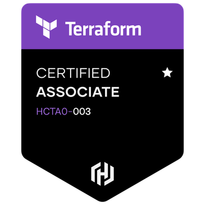

Credentials
My Certifications
Dive into my comprehensive collection of industry-recognized certifications that showcase my expertise in cloud computing, DevOps practices, and Linux systems administration. Each certification represents a milestone in my professional journey, demonstrating my commitment to continuous learning and mastery of cutting-edge technologies.
